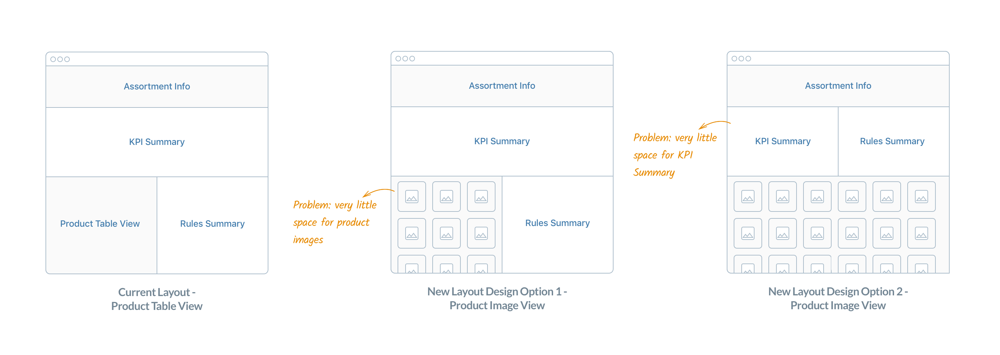

SAP Retail Assortment Planning
Case Study: Building Assortment Plans Visually
Retail Assortment Planning (RAP) is an enterprise application for creating retail purchase order recommendations in the SAP ERP system. The result of an assortment planning process is an assortment plan for seasonal and non-seasonal merchandise.
To comply with my non-disclosure agreement, I have omitted and obfuscated confidential information in this case study. All information in this case study is my own and does not necessarily reflect the views of SAP.
For years, retailers have been using spreadsheets to manually manage assortment plans. It is time-consuming and difficult to maintain. SAP has been developing software solutions for an end-to-end workflow to define and execute retail assortments to improve conversion of traffic into sales/margin, and to increase customer satisfaction.
My Role - Interaction Designer
I was part of the project team to tailor the experience of creating assortment plans to fashion retailers. I was responsible for the interaction design of the responsive web application.
I worked alongside --
The Challenge
The previous RAP application adopted a more numerical representation of data while focusing heavily on forecasting profit and KPI. However, fashion assortment planners intended to work with more pictures and visuals of products to create assortments. Our team upgraded the UX/UI of the application to make the it more intuitive for planners.
The Process
We followed the SAP design-led development process to make sure that our design solutions were supported by user research and feedback.
Activities performed in each stage
The Discover
Every 6 months we have a new product release. At the beginning of this particular new release, we had Behavioral Interviews with our end users and stakeholders. These open-ended conversations with end users and stakeholders helped us determine the needs of the people who will actually use our final products, and incorporate their feedback into our work.
By the end of the research, we updated our existing Personas to represent what we learned from our research. What we learned was that comparing with assortment planners from other industries, fashion planners worked with a lot of visuals to make decisions. For example, they would like to compare products of different colors visually so that they can pick the colors missing in their current assortment plan. All the needs were potential features that could be incorporated into our product.
The Design
We used User Stories framework to walk through the scenario of picking and assigning a product into modules in our current system. Combined with our findings about users’ pain points in the discovery phase, we identified the gaps between users’ desired functionality and our current system. Then we updated the user story map to manage our new features.
Pain Point 1. Cannot select and assign products visually.
Pain Point 2. No powerful visual system to compare products.
Product Image View
To nail down all the information sections that needs to be included on the assortment object page, I personally created the flow chart to help me decide the importance and priority of different sections.
The first design challenge I encountered was to use the limited screen space to allow users to see all the information they need to finish their task - assigning products into modules. As soon as I finished the first iterations of wireframes, our team had a qualitative test with five end users to validate the design solutions.
“I would like to use all the screen spaces to review and compare all the products.”
5/5 testers told us that they spent 95% of their time in product table/image sections and would need a workspace only to review as many items as possible, while the KPI and rule summary were only necessary to check when they made updates. And as a result, we kept the KPI and Rule Summary sections in table view and remove these two sections in image view.
Responsive Card Design
Responsive card has been a popular way to present personalized digital contents. In our application, we decided to present product information (images, categories, etc.) in the form of digital cards.
To design the cards, I started with summarizing different information I need to include on the card. Then I prototyped different versions to generate feedbacks among teammates.
User Flow and Mock-ups
After deconstructing and ideating difficult design challenges, I started to compose the designs into the complete screen flow in Axure to guide front-end development.
The Develop
In the develop phase, we ran usability tests with end users to iterate the product forward. When the release deadline approached, we documented valuable feedbacks that we cannot incorporate in this release into the product backlog for future releases.